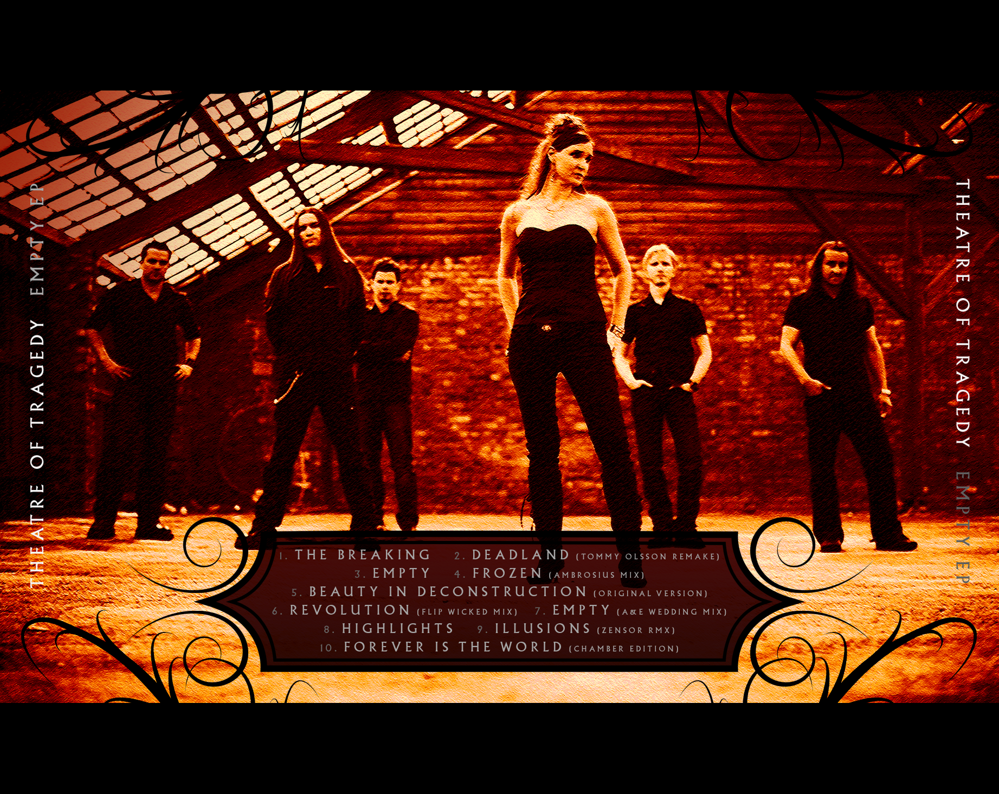
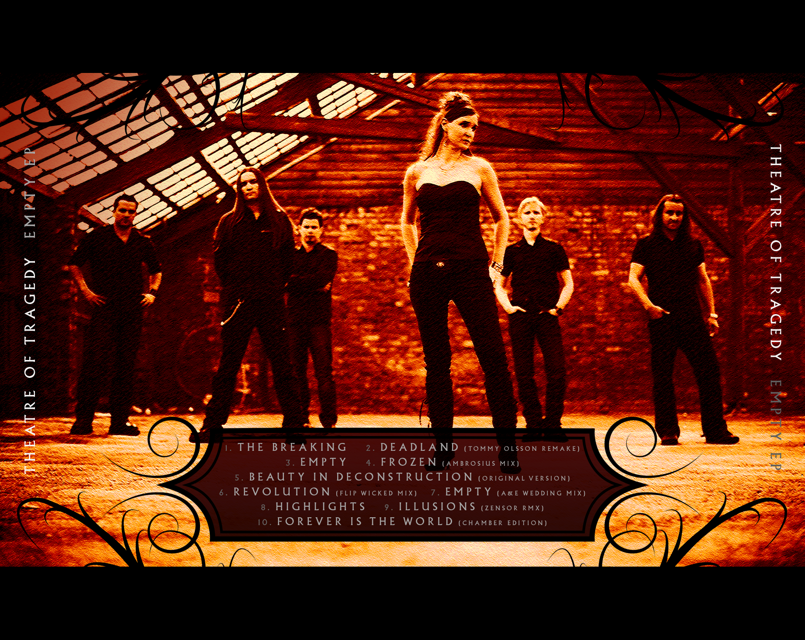
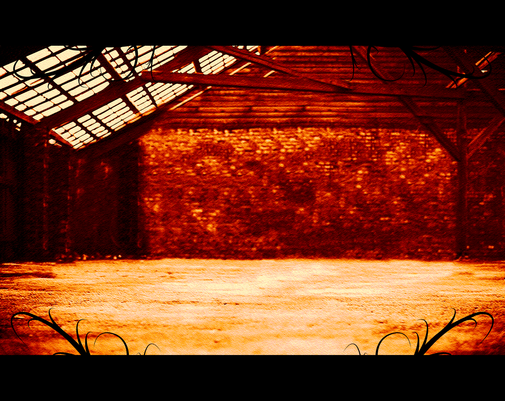
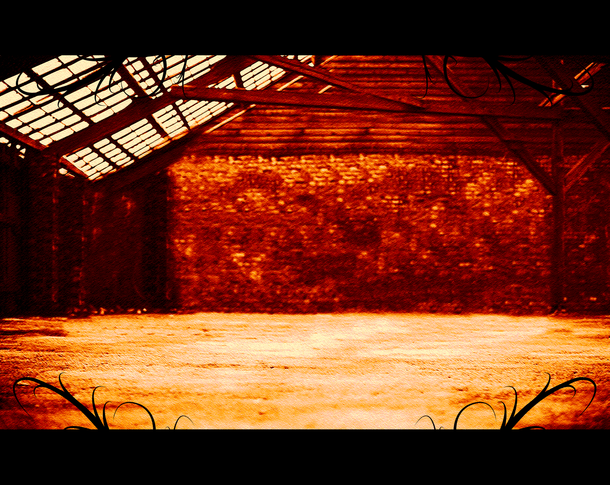

Back in 2009 I’ve contributed in a competition for designing the cover art of an EP for the norwegian band Theatre of Tragedy. I’ve adapted an image of a forest in my hometown that had been destroyed by bark beetle to match their current album’s fiery colorization.
As a long-time fan of the pioneers of the gothic metal genre I was stunned to win this competition. In addition, I was honored to complete the artwork by also illustrating the booklet and inlay.
Listen on Spotify See on DeviantArt
For your viewing pleasure, here are all booklet assets:
 

 
